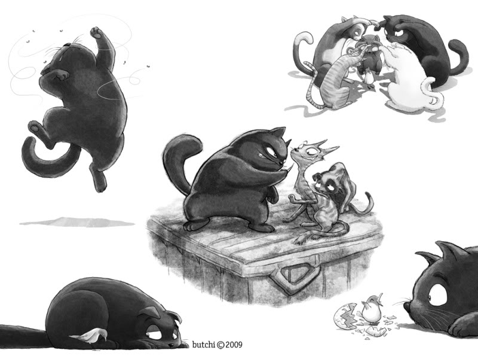

“There’s a school of herring near the harbor!”
the scout gull announced, and the flock of birds from the Red Sand Lighthouse
responded with joyful, long cries.
They were flying over the Elber River, where the waters flow into the
North Sea. From the air, they saw ships following one another like a pod of
patient and disciplined whales waiting their turn to rush out into the open
sea. Once at sea, the ships would determine their course and then spread out
to every port on the planet.

Kengah, the silver-feathered seagull, was particularly fascinated by
the flags of the ships, for she knew that each flag represented a different
way of saying or n
“Humans have such a hard time,” Kengah once remarked to a fellow seagull.
“Unlike us seagulls, who all over the world just squawk the same thing.”
Kengah, the silver-feathered seagull, was particularly fascinated by
the flags of the ships, for she knew that each flag represented a different
way of saying or n